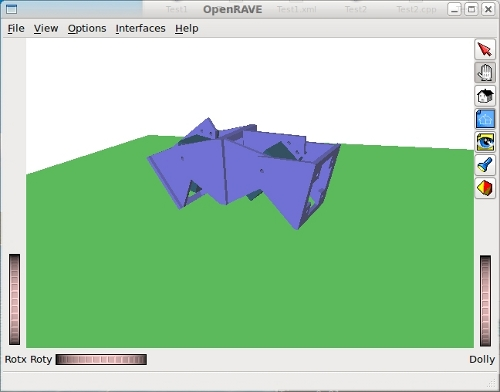

La semana pasada implementé el controlador “odecontroller” para OpenRave, siguiendo las directrices que me había dado Rosen Diankov (el autor de Openrave). Lo envié a la lista de usuarios y tras las modificaciones añadidas por Rosen, el parche fue integrado en el svn (r1343).

En este vídeo se muestra un ejemplo de locomoción de Minicube-I, usando el odecontroller. Ahora ya no es necesario parchear el openrave para que funcione. Este ejemplo es la versión 0.3. Los ficheros de descarga y las instrucciones para probarlo están disponibles en esta página del wiki.
Odecontroller está dentro del plugin Oderave y permite a los usuarios acceder a “bajo nivel” a la física de ODE. De momento sólo está implementado el comando “setvelocity” para establecer la velocidad de las articulaciones.
Con este controlador, ya puedo empezar a portar mis simulaciones de los robots modulares a OpenRave. Para ello voy a hacer un plug-in para robots modulares.